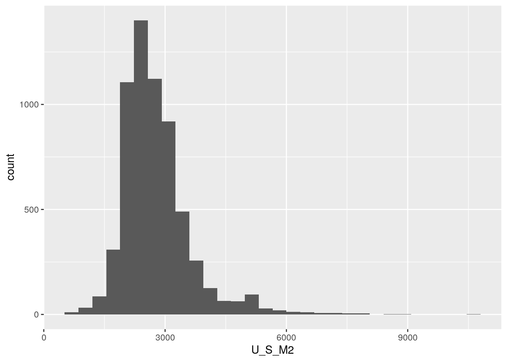
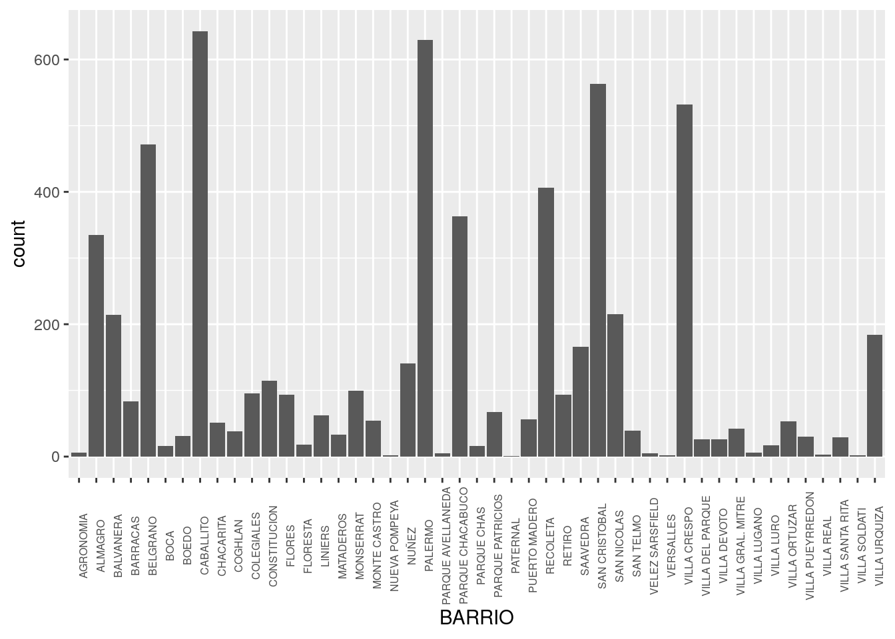
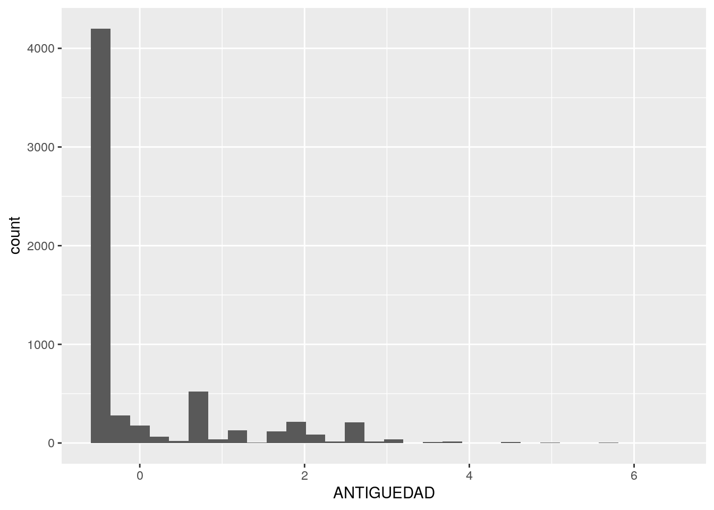
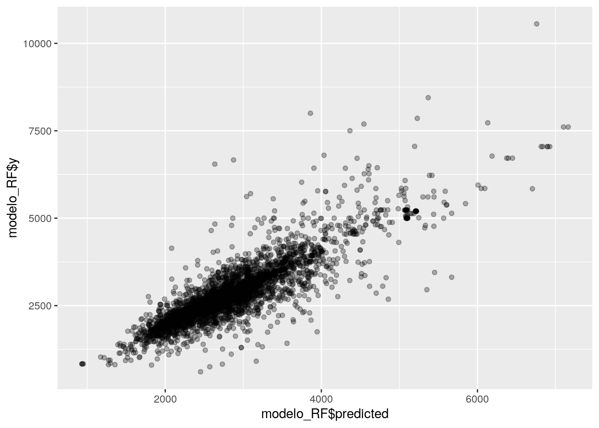
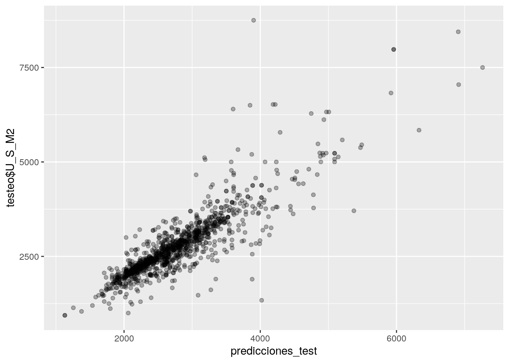
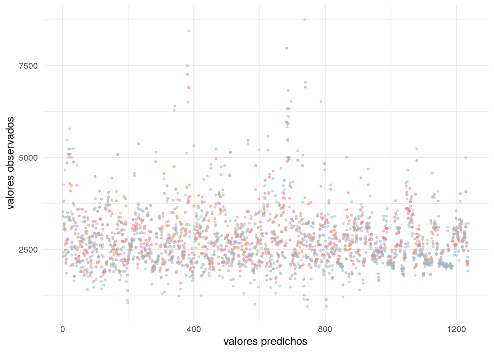

Capítulo 7 Machine Learning (en una aplicación urbana)
El así llamado machine learning consiste el empleo de aprendizaje estadístico automatizado para identificar patrones en grandes volúmenes de datos. El machine learning (de aquí en más ML) es utilizado en infinidad de campos debido a su creciente facilidad de uso y capacidad -en ciertos contextos- para predecir resultados con alta precisión.
A continuación veremos como se aplica ML para predecir el valor de venta de los departamentos en CABA a partir de un dataset publicado en el portal de datos abiertos BA Data que contiene el relevamiento de departamentos en venta que realizó el GCBA en 2016.
El objetivo del ejercicio es predecir el valor del metro cuadrado (USD x m2) de los departamentos en función de atributos como la cantidad de m2 descubiertos, la cantidad de ambientes, el barrio donde se ubican, la antiguedad de la construcción, etc.
Allá vamos.
7.1 Paso 0: Cargar paquetes
Además de las funciones de R “base”, vamos a usar las del paquete tidyverse para procesar y visualizar nuestros datos, las de sf para hacer algunos análisis espaciales y las de randomForest, para aplicar el algoritmo de ML homónimo, que es relativamente simple y a la vez efectivo.
7.2 Paso 1: Cargar los datos
Descargamos de BA Data el dataset del relevamiento de departamentos en venta del siguiente modo:
7.3 Paso 2: Examinar los datos
Echamos un vistazo a los nombres de las columnas y las primeras filas del dataset:
## [1] "CALLE" "NUMERO"
## [3] "ID_ZONAPRO" "OPERACION"
## [5] "TIPO" "M2"
## [7] "M2CUB" "PRECIOTEXT"
## [9] "PRECIOARS" "PRECIOARSM"
## [11] "DOLARES" "U_S_M2"
## [13] "AMBIENTES" "ANTIGUEDAD"
## [15] "BAÑOS" "DIRECCION"
## [17] "LOCATION" "PUBLICADO"
## [19] "PROCESADO" "URL"
## [21] "REVISION" "NOTA"
## [23] "DIRECCION_NORMALIZADA" "BARRIO"
## [25] "COMUNA" "CODIGO_POSTAL"
## [27] "CODIGO_POSTAL_ARGENTINO" "LATITUD"
## [29] "LONGITUD"## CALLE NUMERO ID_ZONAPRO OPERACION TIPO M2 M2CUB PRECIOTEXT
## 1 GUATEMALA 5574 42408691 VTA DTO 57 50 U$S 170.150
## 2 ZAPATA 300 42408710 VTA DTO 46 46 U$S 118.650
## 3 ZAPATA 300 42518390 VTA DTO 61 56 U$S 181.470
## 4 ZAPATA 300 42518402 VTA DTO 140 76 U$S 320.000
## 5 JUSTO, JUAN B. AV. 2300 42621693 VTA DTO 39 33 U$S 82.116
## 6 JUSTO, JUAN B. AV. 2300 42621702 VTA DTO 39 34 U$S 81.921
## PRECIOARS PRECIOARSM DOLARES U_S_M2 AMBIENTES ANTIGUEDAD BAÑOS
## 1 2977625 59553 170150 3403 2 2016 1
## 2 2076375 45139 118650 2579 0 2016 1
## 3 3175725 56709 181470 3241 2 2016 1
## 4 5600000 73684 320000 4211 2 2016 1
## 5 1437030 43546 82116 2488 0 2016 1
## 6 1433617 42165 81921 2409 0 2016 1
## DIRECCION
## 1 GUATEMALA 5574
## 2 ZAPATA 300
## 3 ZAPATA 300
## 4 ZAPATA 300
## 5 JUSTO JUAN B. AVDA. AL 2300
## 6 JUSTO JUAN B. AVDA. AL 2300
## LOCATION PUBLICADO
## 1 GUATEMALA 5574 PALERMO HOLLYWOOD PALERMO 27/11/2016
## 2 ZAPATA 300 BELGRANO CAPITAL FEDERAL 27/11/2016
## 3 ZAPATA 300 BELGRANO CAPITAL FEDERAL 27/11/2016
## 4 ZAPATA 300 BELGRANO CAPITAL FEDERAL 27/11/2016
## 5 JUSTO JUAN B. AVDA. AL 2300 VILLA CRESPO CAPITAL FEDERAL 27/7/2016
## 6 JUSTO JUAN B. AVDA. AL 2300 VILLA CRESPO CAPITAL FEDERAL 27/7/2016
## PROCESADO URL REVISION
## 1 12/10/2017 HTTP://WWW.ZONAPROP.COM.AR/PROPIEDADES/A-42408691.HTML NA
## 2 12/10/2017 HTTP://WWW.ZONAPROP.COM.AR/PROPIEDADES/A-42408710.HTML NA
## 3 11/10/2017 HTTP://WWW.ZONAPROP.COM.AR/PROPIEDADES/A-42518390.HTML NA
## 4 11/10/2017 HTTP://WWW.ZONAPROP.COM.AR/PROPIEDADES/A-42518402.HTML NA
## 5 10/10/2017 HTTP://WWW.ZONAPROP.COM.AR/PROPIEDADES/A-42621693.HTML NA
## 6 10/10/2017 HTTP://WWW.ZONAPROP.COM.AR/PROPIEDADES/A-42621702.HTML NA
## NOTA DIRECCION_NORMALIZADA BARRIO COMUNA CODIGO_POSTAL
## 1 NA GUATEMALA 5574 PALERMO COMUNA 14 1425
## 2 NA ZAPATA 300 PALERMO COMUNA 14 1426
## 3 NA ZAPATA 300 PALERMO COMUNA 14 1426
## 4 NA ZAPATA 300 PALERMO COMUNA 14 1426
## 5 NA JUSTO, JUAN B. AV. 2300 VILLA CRESPO COMUNA 15 1414
## 6 NA JUSTO, JUAN B. AV. 2300 VILLA CRESPO COMUNA 15 1414
## CODIGO_POSTAL_ARGENTINO LATITUD LONGITUD
## 1 C1425BVH -34.58058 -58.43176
## 2 C1426AED -34.57387 -58.44061
## 3 C1426AED -34.57387 -58.44061
## 4 C1426AED -34.57387 -58.44061
## 5 C1414CWY -34.59298 -58.44154
## 6 C1414CWY -34.59298 -58.44154El dataset contiene 29 columnas (mucha información!). Por lo tanto, debemos revisar las variables y hacer una preselección para incluir solo aquellas que consideremos relevantes para nuestro modelo:
La variable a predecir (dependiente) será el valor del m2 de los departamentos (U_S_M2) en CABA.
Las variables predictoras (independientes) serán: cantidad de ambientes (AMBIENTES), años de antiguedad de la construcción (ANTIGUEDAD), cantidad de baños (BAÑOS), superficie total (M2), superficie cubierta (M2CUB), barrio al que pertenece (BARRIO) y coordenadas (LATITUD, LONGITUD).
Ahora si, seleccionemos únicamente las variables que queremos incluir:
dptos_2016 <- dptos_2016 %>%
select(M2, M2CUB, U_S_M2, AMBIENTES, ANTIGUEDAD, BAÑOS, BARRIO, LATITUD, LONGITUD)Y veamos un resumen del contenido:
## M2 M2CUB U_S_M2 AMBIENTES
## Min. : 15.00 Min. : 0.00 Min. : 0 Min. : 0.000
## 1st Qu.: 41.00 1st Qu.: 37.00 1st Qu.: 2242 1st Qu.: 2.000
## Median : 54.00 Median : 47.00 Median : 2651 Median : 2.000
## Mean : 70.38 Mean : 61.12 Mean : 2804 Mean : 2.456
## 3rd Qu.: 80.00 3rd Qu.: 70.00 3rd Qu.: 3131 3rd Qu.: 3.000
## Max. :730.00 Max. :625.00 Max. :12500 Max. :10.000
##
## ANTIGUEDAD BAÑOS BARRIO LATITUD
## Min. : 0.0 Min. :0.00 :1382 Min. :-34.68
## 1st Qu.: 1.0 1st Qu.:1.00 CABALLITO : 643 1st Qu.:-34.62
## Median : 30.0 Median :1.00 PALERMO : 629 Median :-34.60
## Mean : 710.6 Mean :1.25 SAN CRISTOBAL: 563 Mean :-34.60
## 3rd Qu.:2016.0 3rd Qu.:2.00 VILLA CRESPO : 532 3rd Qu.:-34.58
## Max. :2016.0 Max. :6.00 BELGRANO : 473 Max. :-34.54
## (Other) :3342 NA's :1382
## LONGITUD
## Min. :-58.53
## 1st Qu.:-58.45
## Median :-58.43
## Mean :-58.43
## 3rd Qu.:-58.41
## Max. :-58.35
## NA's :1382El resumen nos muestra que las superficies totales de los departamentos relevados varían entre 15 y 730m2, siendo 70m2 la media. También podemos ver que las variables M2CUB, U_S_M2, AMBIENTES, ANTIGUEDAD y BAÑOS tienen valores mínimos de 0, lo cual resulta bastante extraño.
Pero no importa, no nos preocupemos porque ya aprendimos varias formas de limpiar datos, así que manos a la obra.
7.4 Paso 3: Limpiar los datos
7.4.1 Imputar valores faltantes
Es habitual que los algoritmos empleados para ML no acepten datos faltantes. Es por eso que la limpieza básica de un dataset casi siempre incluye la imputación de datos no disponibles, evitando descartar por incompletas filas que contienen información valiosa en los campos que si están disponibles.
Hasta acá pudimos observar varias inconsistencias en los datos cargados, como por ejemplo:
- La variable M2CUB tiene valor 0 en algunos registros. Suponiendo que hubo un error en la carga de los datos, cuando M2CUB<15 vamos a imputar el valor de M2, asumiendo que esa propiedad no tiene m2 descubiertos.
- Hay casos donde M2CUB>M2. Acá le imputaremos el valor del M2CUB al M2.
- En la variable ANTIGUEDAD aparecen algunos registros con el valor 2016. Suponiendo que esas propiedades se construyeron en ese año, se imputará una antiguedad 1 ya que fue construida en el mismo año del relevamiento. Del mismo modo, y bajo el mismo supuesto, todos los registos que tengan ANTIGUEDAD=0, serán reemplazados por ANTIGUEDAD=1.
- Las variables AMBIENTES y BAÑOS tiene 0 en algunos casos. Imputaremos estos datos entendiendo que cuando AMBIENTES=0, es un monoambiente, y que cuando BAÑOS=0, es porque tienen 1 solo.
- Hay 1.382 valores faltantes en las columnas LONGITUD y LATITUD, y a su vez estos registros tampoco tienen comuna o barrio asignado, por lo tanto como nos va a resultar imposible ubicarlos en el espacio, estos sí debemos eliminarlos.
- Por último, se puede ver que la variable a predecir (U_S_M2) varía entre 0 y 12500. Claramente ninguna propiedad publicada en CABA puede tener U_S_M2=0 o menos de 500 así que estos registros, que son pocos casos, también se eliminarán.
Para llevar a cabo todos los ajustes mencionados, utilizaremos las ya conocidadas mutate y filter:
dptos_2016 <- dptos_2016 %>%
mutate(M2CUB=ifelse(M2CUB<15, M2, M2CUB),
M2=ifelse(M2CUB>M2, M2CUB, M2),
ANTIGUEDAD=ifelse(ANTIGUEDAD==2016, 1, ANTIGUEDAD),
ANTIGUEDAD=ifelse(ANTIGUEDAD==0, 1, ANTIGUEDAD),
BAÑOS = ifelse(BAÑOS==0, 1, BAÑOS),
AMBIENTES = ifelse(AMBIENTES==0, 1, AMBIENTES)) %>%
filter(U_S_M2>500,
!is.na(LATITUD), !is.na(LONGITUD))Listo, ya tenemos preparadas las variables para nuestro modelo, pero aún estamos a tiempo de generar algunas nuevas que consideremos que, por tener capacidad predictiva sobre el valor del m2, lo mejorarían.
Por ejemplo, probemos sumar una nueva variable al modelo donde se calculen los metros descubiertos (M2DESC) de cada propiedad, ya que, es muy probable que tener alguna expansión (balcón o terraza) le de un valor agregado al departamento.
Ahora sí, volvamos a ver el resumen:
## M2 M2CUB U_S_M2 AMBIENTES
## Min. : 15.00 Min. : 15.00 Min. : 608 Min. : 1.000
## 1st Qu.: 41.00 1st Qu.: 38.00 1st Qu.: 2230 1st Qu.: 2.000
## Median : 53.00 Median : 47.00 Median : 2631 Median : 2.000
## Mean : 68.44 Mean : 60.28 Mean : 2768 Mean : 2.518
## 3rd Qu.: 78.00 3rd Qu.: 69.00 3rd Qu.: 3107 3rd Qu.: 3.000
## Max. :730.00 Max. :625.00 Max. :10555 Max. :10.000
##
## ANTIGUEDAD BAÑOS BARRIO LATITUD
## Min. : 1.000 Min. :1.000 CABALLITO : 643 Min. :-34.68
## 1st Qu.: 1.000 1st Qu.:1.000 PALERMO : 629 1st Qu.:-34.62
## Median : 1.000 Median :1.000 SAN CRISTOBAL: 563 Median :-34.60
## Mean : 9.535 Mean :1.331 VILLA CRESPO : 532 Mean :-34.60
## 3rd Qu.: 10.000 3rd Qu.:2.000 BELGRANO : 472 3rd Qu.:-34.58
## Max. :110.000 Max. :6.000 RECOLETA : 406 Max. :-34.54
## (Other) :2933
## LONGITUD M2DESC
## Min. :-58.53 Min. : 0.000
## 1st Qu.:-58.45 1st Qu.: 0.000
## Median :-58.43 Median : 4.000
## Mean :-58.43 Mean : 8.163
## 3rd Qu.:-58.41 3rd Qu.: 8.000
## Max. :-58.35 Max. :282.000
## Todo parece funcionar bien: Nos hemos librado de los NA y las inconsistencias que tenían los datos.
Pero antes de seguir con nuestro modelo, espiemos la distribución de algunas variables, como por ejemplo el valor del m2:

La superficie total:

La superficie descubierta:
La antigüedad de las viviendas:
Y el Barrio que, como se trata de una variable categórica en lugar de continua, lo veremos con un gráfico de barras en lugar de un histograma:
ggplot() +
geom_bar(data = dptos_2016, aes(x = BARRIO))+
theme(axis.text.x = element_text(size = 6, angle = 90))
Todavía podemos agregar una variable más: Probemos con la distancia de los departamentos a las estaciones de subte, ya que la cercanía a estas es muy probable que impacte en el valor del m2.
Acá utilizaremos uno de los geoprocesos que aprendimos algunos capítulos atrás: st_distance
Carguemos las estaciones:
## Reading layer `subte_estaciones' from data source `http://bitsandbricks.github.io/data/subte_estaciones.geojson' using driver `GeoJSON'
## Simple feature collection with 86 features and 3 fields
## geometry type: POINT
## dimension: XY
## bbox: xmin: -58.48639 ymin: -34.64331 xmax: -58.36993 ymax: -34.55564
## CRS: 4326Transformemos dptos_2016 a un dataset espacial para poder medir distancias:
Y ahora calculemos la distancia (en metros) entre cada departamento en venta y la estación de subte más cercana:
dptos_2016 <- dptos_2016 %>%
mutate(DIST_SUBTE = apply(st_distance(dptos_2016, subte_estaciones), 1, function(x) min(x)))Veamos un resumen de los resultados:
## Min. 1st Qu. Median Mean 3rd Qu. Max.
## 1.35 282.77 477.19 706.81 762.33 5658.53Y saquemos conclusiones: El departamento ubicado a menor distancia de alguna estación de subte es a 1.35 metros y el que está a mayor distancia es a 5658 metros (56 cuadras). Sin embargo, en promedio, las propiedades se ubican a 706 metros (7 cuadras) de alguna estación.
En el paso anterior, transformamos nuestro dataset tradicional en un dataset espacial para poder medir distancias, pero como queremos utilizar los datos de LATITUD y LONGITUD para el modelo, debemos volver a separar las coordenadas y transformarlo en dataframe tradicional:
7.4.2 Codificar variables categóricas
Rara vez es posible utilizar columnas categóricas en modelos estadísticos, pero por suerte podemos recurrir a la alternativa de reemplazar una columna de datos categóricos por una serie de variables binarias, o “dummy”. En nuestro dataset seleccionamos solamente una variable categórica: BARRIO.
Entonces, en lugar de…
| dpto | BARRIO |
|---|---|
| A | PALERMO |
| B | BELGRANO |
| C | SAN TELMO |
… deberíamos tener algo parecido a:
| caso | PALERMO | BELGRANO | SAN TELMO |
|---|---|---|---|
| A | 1 | 0 | 0 |
| B | 0 | 1 | 0 |
| C | 0 | 0 | 1 |
Para evitar futuros problemas por tener espacios en los encabezados de las nuevas columnas, comencemos reemplazando los " " en los nombres de barrios por un "_". Por ejemplo, en vez de decir SAN TELMO, que pase a decir SAN_TELMO.
Como buen lenguaje creado por y para practicantes del análisis estadístico, R trae una función específica para realizar esta tarea: model.matrix() que se usa de la siguiente forma:
y el resultado es, ni más ni menos, una matriz de variables binarias que representan las categorías originales:
## BARRIOAGRONOMIA BARRIOALMAGRO BARRIOBALVANERA BARRIOBARRACAS BARRIOBELGRANO
## 1 0 0 0 0 0
## 2 0 0 0 0 0
## 3 0 0 0 0 0
## 4 0 0 0 0 0
## 5 0 0 0 0 0
## 6 0 0 0 0 0
## BARRIOBOCA BARRIOBOEDO BARRIOCABALLITO BARRIOCHACARITA BARRIOCOGHLAN
## 1 0 0 0 0 0
## 2 0 0 0 0 0
## 3 0 0 0 0 0
## 4 0 0 0 0 0
## 5 0 0 0 0 0
## 6 0 0 0 0 0
## BARRIOCOLEGIALES BARRIOCONSTITUCION BARRIOFLORES BARRIOFLORESTA BARRIOLINIERS
## 1 0 0 0 0 0
## 2 0 0 0 0 0
## 3 0 0 0 0 0
## 4 0 0 0 0 0
## 5 0 0 0 0 0
## 6 0 0 0 0 0
## BARRIOMATADEROS BARRIOMONSERRAT BARRIOMONTE_CASTRO BARRIONUEVA_POMPEYA
## 1 0 0 0 0
## 2 0 0 0 0
## 3 0 0 0 0
## 4 0 0 0 0
## 5 0 0 0 0
## 6 0 0 0 0
## BARRIONUÑEZ BARRIOPALERMO BARRIOPARQUE_AVELLANEDA BARRIOPARQUE_CHACABUCO
## 1 0 1 0 0
## 2 0 1 0 0
## 3 0 1 0 0
## 4 0 1 0 0
## 5 0 0 0 0
## 6 0 0 0 0
## BARRIOPARQUE_CHAS BARRIOPARQUE_PATRICIOS BARRIOPATERNAL BARRIOPUERTO_MADERO
## 1 0 0 0 0
## 2 0 0 0 0
## 3 0 0 0 0
## 4 0 0 0 0
## 5 0 0 0 0
## 6 0 0 0 0
## BARRIORECOLETA BARRIORETIRO BARRIOSAAVEDRA BARRIOSAN_CRISTOBAL
## 1 0 0 0 0
## 2 0 0 0 0
## 3 0 0 0 0
## 4 0 0 0 0
## 5 0 0 0 0
## 6 0 0 0 0
## BARRIOSAN_NICOLAS BARRIOSAN_TELMO BARRIOVELEZ_SARSFIELD BARRIOVERSALLES
## 1 0 0 0 0
## 2 0 0 0 0
## 3 0 0 0 0
## 4 0 0 0 0
## 5 0 0 0 0
## 6 0 0 0 0
## BARRIOVILLA_CRESPO BARRIOVILLA_DEL_PARQUE BARRIOVILLA_DEVOTO
## 1 0 0 0
## 2 0 0 0
## 3 0 0 0
## 4 0 0 0
## 5 1 0 0
## 6 1 0 0
## BARRIOVILLA_GRAL._MITRE BARRIOVILLA_LUGANO BARRIOVILLA_LURO
## 1 0 0 0
## 2 0 0 0
## 3 0 0 0
## 4 0 0 0
## 5 0 0 0
## 6 0 0 0
## BARRIOVILLA_ORTUZAR BARRIOVILLA_PUEYRREDON BARRIOVILLA_REAL
## 1 0 0 0
## 2 0 0 0
## 3 0 0 0
## 4 0 0 0
## 5 0 0 0
## 6 0 0 0
## BARRIOVILLA_SANTA_RITA BARRIOVILLA_SOLDATI BARRIOVILLA_URQUIZA
## 1 0 0 0
## 2 0 0 0
## 3 0 0 0
## 4 0 0 0
## 5 0 0 0
## 6 0 0 0En breves agregaremos la matriz a nuestro dataframe de departamentos, pero antes terminemos con algunos ajustes que nos quedaron pendientes.
7.4.3 Unificar la escala de las variables numéricas
Este paso siempre es necesario cuando estamos trabajando con variables que utilizan distintas unidades de medida. Aquí tenemos superficies, ambientes, años de antigüedad… de todo. Muchos algoritmos asumen que todas las variables tienen escalas comparables, lo cual genera problemas con las que alcanzan los valores más altos (como m2, que llega a 730) versus las que tienen rangos mucho menores (como cantidad de baños, que llega a 6). Si las dejásemos así, varias de las técnicas habituales del ML adjudicarían mucho más peso a las variables con números grandes, “despreciando” a las que por su naturaleza se mueven en rango más reducidos.
En todo caso, no importa lo disímiles que sean las unidades de medida, la solución es simple: convertimos todas las variables a la famosa “distribución Z”, o función de estandarización, que convierte variables a una escala sin unidad de medida, que expresa cada valor como la cantidad de desvíos estándar que lo alejan de la media. Expresar todas las variables numéricas en forma de “z scores”, o “valores z”, las hace directamente comparables entre sí.
En R disponemos de la función scale(), que obtiene los z-scores. Tomaremos entonces nuestro dataframe y usaremos mutate_all() para aplicar una función a todas las columnas restantes de un tirón. Eso si, quitando antes ciertas variables: las variables categóricas (que no tiene sentido pasar a z-scores porque no son variables numéricas), y la variable que estamos intentando predecir, ya que su escala no afecta los modelos y podemos dejarla en su formato original fácil de interpretar.
dptos_2016 <- dptos_2016 %>%
select(-BARRIO) %>%
mutate_all(funs(scale)) %>%
mutate(U_S_M2 = dptos_2016$U_S_M2)## M2.V1 M2CUB.V1 U_S_M2 AMBIENTES.V1
## Min. :-1.139657 Min. :-1.128859 Min. : 608 Min. :-1.648294
## 1st Qu.:-0.585166 1st Qu.:-0.555401 1st Qu.: 2230 1st Qu.:-0.562206
## Median :-0.329247 Median :-0.331005 Median : 2631 Median :-0.562206
## Mean : 0.000000 Mean : 0.000000 Mean : 2768 Mean : 0.000000
## 3rd Qu.: 0.203918 3rd Qu.: 0.217519 3rd Qu.: 3107 3rd Qu.: 0.523882
## Max. :14.108855 Max. :14.080225 Max. :10555 Max. : 8.126499
## ANTIGUEDAD.V1 BAÑOS.V1 M2DESC.V1
## Min. :-0.538418 Min. :-0.541044 Min. :-0.520562
## 1st Qu.:-0.538418 1st Qu.:-0.541044 1st Qu.:-0.520562
## Median :-0.538418 Median :-0.541044 Median :-0.265463
## Mean : 0.000000 Mean : 0.000000 Mean : 0.000000
## 3rd Qu.: 0.029315 3rd Qu.: 1.093465 3rd Qu.:-0.010364
## Max. : 6.337456 Max. : 7.631505 Max. :17.463925
## DIST_SUBTE.V1 LATITUD.V1 LONGITUD.V1
## Min. :-0.869389 Min. :-2.8800908 Min. :-3.404775
## 1st Qu.:-0.522573 1st Qu.:-0.6580219 1st Qu.:-0.892539
## Median :-0.282983 Median :-0.0170810 Median :-0.085086
## Mean : 0.000000 Mean : 0.0000000 Mean : 0.000000
## 3rd Qu.: 0.068419 3rd Qu.: 0.7382813 3rd Qu.: 0.706665
## Max. : 6.102341 Max. : 2.3325377 Max. : 2.520604Obsérvese que scale() mediante, ahora todas las variables (menos U_S_M2) tienen promedio igual a 0, y se mueven en el mismo rango sin que esto haya cambiado la forma de las distribuciones.
Comparemos los “nuevos” histogramas con los que examinamos al inicio:
La superficie total:
La superficie descubierta:
La antigüedad de las viviendas:

¡Las formas son iguales! no hemos hemos perdido “información” respecto a que tan típico o extremo es cada valor, y hemos ganado la posibilidad de comparar en forma directa todas las variables.
7.4.4 Consolidar todas las variables generadas ad-hoc en un sólo dataframe
Nos ha quedado por un lado un dataframe de variables numéricas estandarizadas, y por otro una matriz que representa la pertenencia de cada departamento a un barrio de la Ciudad.
Primero convertimos la matriz de barrios en dataframe (paso simple ya que estas estructuras de datos son muy similares entre si), y luego unimos las columnas de ambos con la función cbind():
matriz_categorias_barrios <- as.data.frame(matriz_categorias_barrios)
dptos_2016 <- dptos_2016 %>%
cbind(matriz_categorias_barrios)Ahora que ya tenemos tenemos los datos limpios y en orden, estamos en condiciones de comenzar con nuestro modelo predictivo.
7.5 Paso 4: Crear sets de entrenamiento y de testeo
Para poder evaluar la calidad de un modelo predictivo, es práctica común dividir los datos disponibles en dos porciones. Una parte será utilizada para “entrenar” el modelo de ML, es decir se le permitirá al algoritmo acceder a esos datos para establecer/aprender la forma en que cada variable predictora incide en la que se quiere predecir. El resto será preservado y utilizado para “tomarle examen” al modelo: se le mostraran sólo las variables predictoras de esos datos y se le pedirá una predicción del valor para cada una. Por último, contrastando aciertos y errores, se podrá establecer el grado de precisión del modelo.
Incluso podríamos tener varios modelos distintos, obtenidos con distintas técnicas de ML. No es difícil, ya que una vez que los datos han sido obtenidos y preparados, nada impide usarlos como insumo de distintos algoritmos. En ese caso, se puede comparar la performance de los distintos modelos evaluando cual acierta mejor con la data de testeo.
Definamos entonces cuales son las filas que van a incluirse en el set de entrenamiento, y cuáles en el de testeo, eligiéndolas al azar. De acuerdo a distintas recetas, a veces se separa el 90% de los datos para entrenamiento y el resto para testeo, otras veces es mitad y mitad… ya que siempre es más o menos arbitrario, aquí usaremos el 80% para entrenar, y el 20% para testear.
#definimos a mano la "semilla" de aleatorización para obtener resultados reproducibles
set.seed(1111)Tomamos al azar el 80% de las posiciones entre 1 y la cantidad total de filas de nuestro dataset:
seleccion <- sample(1:nrow(dptos_2016), size = nrow(dptos_2016) * 0.8)
entrenamiento <- dptos_2016 %>%
filter(row_number() %in% seleccion)
# el testeo es el set opuesto - aquellas filas cuya posición no está entre las seleccionadas
# el operador ! convierte una proposición en negativa
testeo <- dptos_2016 %>%
filter(!(row_number() %in% seleccion))Veamos cuantas observaciones quedaron en cada set de datos:
## [1] 4942 57## [1] 1236 57Ahora si, por fin, apliquemos un poco de machine learning.
7.5.1 Paso 5: Entrenar y testear un modelo
Random Forest, una implementación de árboles de decisión como los ilustrados en “Una introducción visual al machine learning”:
modelo_RF <- randomForest(data = entrenamiento, U_S_M2 ~ .,
ntree = 500,
importance = TRUE)
# el parámetro "importance": Define si el modelo estimará la importancia relativa de cada predictor en la calidad de la predicción -es decir, cuales variables son más importantes para predecir
# resultados:
modelo_RF##
## Call:
## randomForest(formula = U_S_M2 ~ ., data = entrenamiento, ntree = 500, importance = TRUE)
## Type of random forest: regression
## Number of trees: 500
## No. of variables tried at each split: 18
##
## Mean of squared residuals: 166450
## % Var explained: 76.48Según lo que dice aquí, el modelo puede explicar casi el 80% de la varianza de valores encontrada entre los departamentos en venta en 2016 en base a todas las variables predictoras que decidimos emplear.
¿Qué tiene dentro el modelo?
## Length Class Mode
## call 5 -none- call
## type 1 -none- character
## predicted 4942 -none- numeric
## mse 500 -none- numeric
## rsq 500 -none- numeric
## oob.times 4942 -none- numeric
## importance 112 -none- numeric
## importanceSD 56 -none- numeric
## localImportance 0 -none- NULL
## proximity 0 -none- NULL
## ntree 1 -none- numeric
## mtry 1 -none- numeric
## forest 11 -none- list
## coefs 0 -none- NULL
## y 4942 -none- numeric
## test 0 -none- NULL
## inbag 0 -none- NULL
## terms 3 terms callDe todo! Por ejemplo, “type” nos emite confirmar qué tipo de análisis realizó: Fue de regresión en este caso, pero podría haber sido otro, como clasificación (cuando se predice un atributo categórico en lugar de una variable continua):
## [1] "regression"O “importance”, que contiene un ranking con la importancia relativa de cada predictor, es decir cuáles son los que más ayudan a estimar el valor a predecir (U_S_M2):
## %IncMSE IncNodePurity
## M2 170405.3782376 270645569.04
## M2CUB 134294.3277435 221452113.17
## AMBIENTES 48984.5707206 63495159.15
## ANTIGUEDAD 182327.5412411 245711058.04
## BAÑOS 74607.5970445 112362124.22
## M2DESC 180674.2790710 261275881.96
## DIST_SUBTE 176521.6801680 264617638.20
## LATITUD 413992.5453703 500524607.66
## LONGITUD 699599.1593140 732943742.64
## BARRIOAGRONOMIA 6.1109342 50231.45
## BARRIOALMAGRO 3425.0417850 5174568.21
## BARRIOBALVANERA 5165.7775106 12632858.63
## BARRIOBARRACAS 602.4320171 1359571.12
## BARRIOBELGRANO 53703.7830256 82005552.59
## BARRIOBOCA 2226.6645687 8059977.35
## BARRIOBOEDO 129.7679756 692676.22
## BARRIOCABALLITO 24001.5913160 22779193.75
## BARRIOCHACARITA 849.1302415 5008125.78
## BARRIOCOGHLAN 147.9159700 842049.34
## BARRIOCOLEGIALES 1734.7723756 5905437.45
## BARRIOCONSTITUCION 1406.6594452 3775022.48
## BARRIOFLORES 623.3206156 2194421.66
## BARRIOFLORESTA 50.9720032 548406.17
## BARRIOLINIERS 208.3842665 444341.83
## BARRIOMATADEROS 156.9745908 767955.35
## BARRIOMONSERRAT 3457.9645045 6058827.59
## BARRIOMONTE_CASTRO 285.6709069 771603.69
## BARRIONUEVA_POMPEYA 0.6181519 102772.05
## BARRIONUÑEZ 4040.6787236 6723864.03
## BARRIOPALERMO 87558.1001621 135914531.21
## BARRIOPARQUE_AVELLANEDA 0.4058692 47294.50
## BARRIOPARQUE_CHACABUCO 23745.2613546 25354031.16
## BARRIOPARQUE_CHAS 3413.2075882 12766924.31
## BARRIOPARQUE_PATRICIOS 488.4688861 793202.79
## BARRIOPATERNAL 0.0000000 126268.58
## BARRIOPUERTO_MADERO 62005.3709601 188295054.36
## BARRIORECOLETA 22937.5507754 26385418.00
## BARRIORETIRO 1838.6391808 7408843.36
## BARRIOSAAVEDRA 906.9669375 2343163.07
## BARRIOSAN_CRISTOBAL 19076.5460187 15731802.46
## BARRIOSAN_NICOLAS 2205.8557488 3070218.74
## BARRIOSAN_TELMO 68.4319709 1541670.81
## BARRIOVELEZ_SARSFIELD -5.7358774 200321.94
## BARRIOVERSALLES -0.1234807 28998.64
## BARRIOVILLA_CRESPO 20471.7150953 17075092.55
## BARRIOVILLA_DEL_PARQUE 84.2250373 665843.63
## BARRIOVILLA_DEVOTO -36.1429484 1687903.42
## BARRIOVILLA_GRAL._MITRE 42.4190298 408725.72
## BARRIOVILLA_LUGANO 221.7012795 2029868.93
## BARRIOVILLA_LURO 7.6858899 621766.65
## BARRIOVILLA_ORTUZAR 232.3501178 1753655.20
## BARRIOVILLA_PUEYRREDON 185.8436268 750870.65
## BARRIOVILLA_REAL 4.2441112 33564.97
## BARRIOVILLA_SANTA_RITA 37.5218071 324228.64
## BARRIOVILLA_SOLDATI 173.9582226 1532857.54
## BARRIOVILLA_URQUIZA 892.7016258 2082640.74La columna “%IncMSE” representa el porcentaje de error promedio, la magnitud en la que el valor predicho por el modelo difiere del valor observado, cuando cada predictor se retira del modelo (es decir, cuanto peor sería la predicción si no se usara). Por eso los números mayores están asociados a los predictores de más peso, que en este caso son LONGITUD, LATITUD, M2DESC, ANTIGUEDAD y DIST_SUBTE. Además de encontrar la correlación esperable entre el valor del m2 y la superficie descubierta de las propiedades, los años de antiguedad y la distancia al subte, nuestro modelo ha encontrado que la ubicación (latitud y longitud) es la clave del valor de la propiedad… y sin saber nada de geografía ni urbanismo.
En “predicted” tenemos la mediana del valor del m2 predicho para cada observación:
## 2 3 4 5 7 8
## 2644.151 3306.486 3782.182 2252.104 2144.658 2977.580Aprovechando que dentro del modelo, “y” contiene los valores observados, evaluemos en forma gráfica cuánto se aproximan las predicciones de cada departamento al valor real (el observado):

Se ajusta bastante bien. Pero ahora veremos una manera de cuantificar la precisión del modelo.
7.5.2 Midiendo la performance del modelo contra datos que no conoce
Veamos ahora como se comporta nuestro modelo cuando debe predecir valores de observaciones que no se han utilizado para el entrenamiento, los que reservamos para el set de testeo.
## 1 6 12 18 20 21
## 3524.172 2303.221 3805.219 3140.920 3200.704 3059.844En un gráfico:

El gráfico es muy similar e incluso parecería que se ajusta mejor que con los datos ya conocidos utilizados para el entreneamiento.
7.5.3 Comparando performance
Es práctico obtener un sólo número, un indicador simple que nos diga que tan bien predice el modelo, y así poder comparar distintos modelos entre si (o distintos datasets contra el mismo modelo) utilizando esa medida. En estadística es común el uso del RMSE como indicador de grado de ajuste, o “Root Mean Square Error” - la raíz cuadrada de la media de los errores al cuadrado.
El modelo incluye el MSE (o sea la suma de los errores al cuadrado) que surge de comparar predicciones con valores observados. Y en el caso de un random forest, que intenta muchos árboles distintos, varios MSEs resultantes: 500 en nuestro caso, uno por cada árbol trazado.
Tomamos la media de todos los MSE para obtener un valor general, y luego tomamos la raíz cuadrada para obtener el RMSE:
## [1] 414.0307Eso significa que la diferencia promedio entre valor esperado y valor hallado para cada distrito fue de 414.0306552 dólares.
Y en comparación, ¿Qué tan bueno resultó el modelo cuando se aplicó a datos que no conocía?
## [1] 422.246Con un valor medio de error de 422.2460377 dólares, el modelo ha funcionado muy bien con datos desconocidos, incluso mejorando levemente su performance respecto al set de training.
Esto indica que no sufre de “overfitting”, la condición de estar excesivamente ajustado a los datos con los que fue entrenado. Por eso el modelo no pierde precisión cuando lidia con datos nuevos.
Como despedida, hagamos un exámen visual y representamos en un gráfico cada valor predicho y cada valor observado para los datos de entrenamiento:
ggplot() +
geom_point(aes(x = 1:length(predicciones_test), y = predicciones_test),
color = "salmon",
alpha = .5,
size = .75) +
geom_point(aes(x = 1:nrow(testeo), y = testeo$U_S_M2),
color = "lightblue3",
alpha = .5,
size = .75) +
labs(x = "valores predichos",
y = "valores observados") +
theme_minimal()
7.6 Ejercicios
Examinando y prediciendo dinámicas urbanas
I. Elegir algun dataset relacionado a temas urbanos que contenga una variable que les resulte de interés como variable a predecir. Por ejemplo: valor del m2, población, etc.
- Realizar un modelo de árboles de decisión (Random Forest) a partir de los siguientes pasos:
- Realizar el análisis de variables y la limpieza necesaria.
- Crear set de entrenamiento y de testeo.
- Entrenar y testear el modelo: Medir la performance.